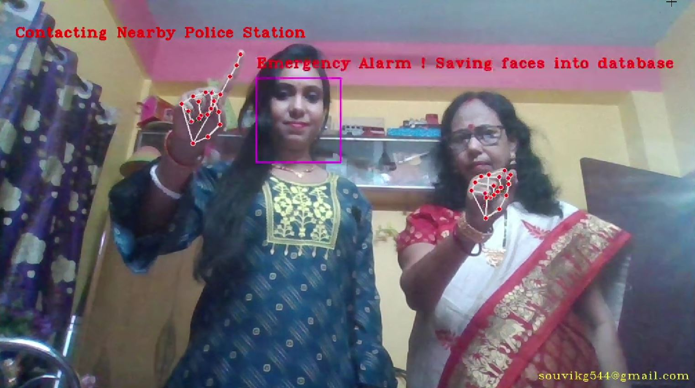
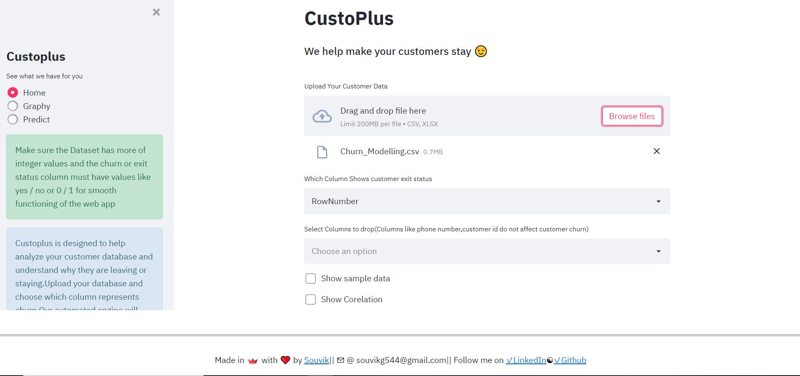
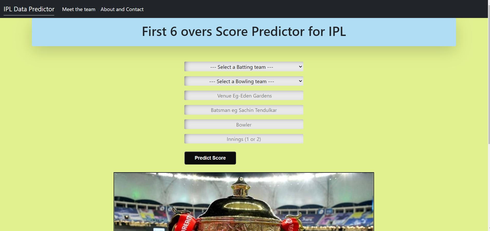
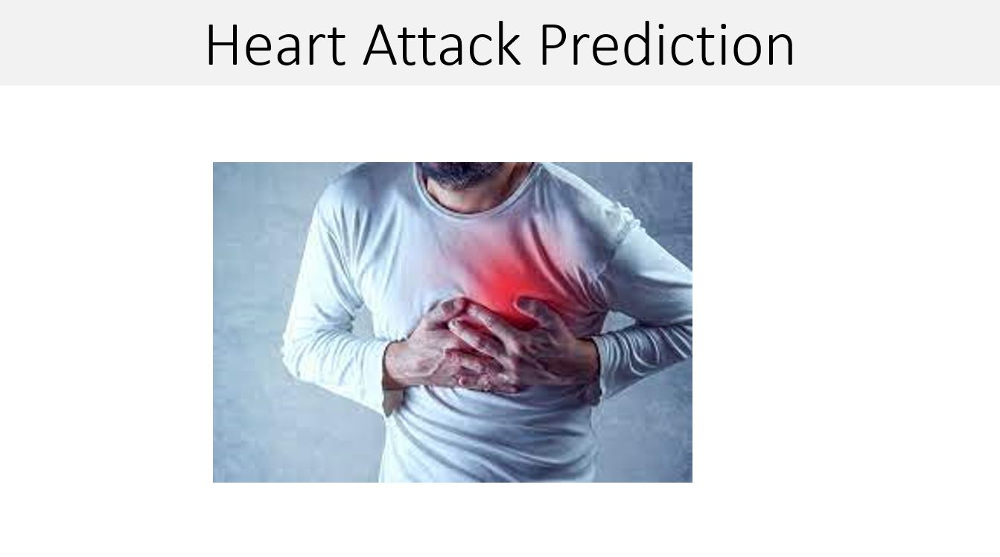

I am a Data Science ,Machine Learning and Deep Learning enthusiast
Google Scholar - Souvik Ghosh
See what India AI says about me- Link to the article
See what Analytics India talks about me- Link to the article
Passionate about Data science, I focus my energy and skills to make use of deep learning, computer vision and machine learning to find solutions to real world problems . I talk about the future of AI in shaping the world we live in . I have worked on both research and corporate problems in the data science domain and have produced successful outcomes in the form of research papers and company growth. Looking forward to make the world a better place through the use of technology.
Keys Skills- Python(Panadas,numpy, matplotlib and seaborn) ,Sql and Power BI to analyze and visualize data. Tackling outliers,dealing with big data,finding out meaningful insights through in depth analysis and plots are my key strengths.
Regression and Classification using Scikit Learn.Worked on business and research problems for predictive modeling,time series analysis, churn analysis and big data from iot to predict future outcomes.
Image processing and analysis using Convolutional Neural Network(CNN). Voice analysis using rms and mfcc and textual analysis using bert.My interest lies in using deep learning in the medical domain coupled with iot based devices.
I have expertise in object detection,face detection and image segmentation algorithms. My interest lies in the use of AI in safety and smart city approaches. I have a good esperience in mediapipe for pose detection ,hand detection .
I am slowly paving my way to iot and sensors and can connect you with people who are into embedded systems and cloud. I have always been a amazed at how brilliant results iot can produce when coupled with data Science.
I have a strong knowledge of python and have been using python for website development using flask and Streamlit ,building api s for easy acessibility of my models and web scraping. I prefer scraping for data mining with beautiful soup, requests to handle api calls and selenium to automate some tasks.

The victim needs to just stare at the camera and show her/his fist as a mark of protest. The system will play a loud alarm in response to the fist. If while making a fist the woman shows her index finger as if showing number 1 ,the system will contact the police nearby(Currently not applied in the prototype) When the woman shows the fist ,every face in the scene is captured and kept to a folder which can then be updated to a database.
||Tensorflow||Keras||FastAPI|| 16,000 Crop images are trained using deep learning (CNN and Ann) to achieve a test accuracy of 94.36% Resizing Rescaling and data argumentation applied. Model is able to identify crop disease of different Indian crops by analyzing their image.
-||OpenCv||Keras||Tensorflow||-Github - Mask Model built using cnn to Facial images acquiring a test accuracy of 99.34% without overfitting - Neural Network based Face Detector detects the face from the live camera and predicts using Mask Model. -Identifies incorrect mask worn of multiple faces.

An automated DataScience Machine learning application that takes a csv or an excel file as an input.Processes the dataset to find out how different columns link with the customer engagement. Helps companies analyze their customer database and reason for churn with varieties of plots and time series analysis. Predicts churn with unknown data.

-Data cleaning and preprocessing done on Ipl datasets(2008-2020). Analyzed the data to find out how the players have improved over they years, change in strike rate after 6 overs, how runs vary over different pitches . -Finally predicted future runs with an F1 score of 91% using regression algorithms.

||Streamlit||Heroku||- link using Logistic Regression Classifier and hyperparameter tuning acquiring a test accuracy of 93.56%. analyzes the data ,predicts heart attack of the user with the test reports given.Uses plots for age and cholesterol.